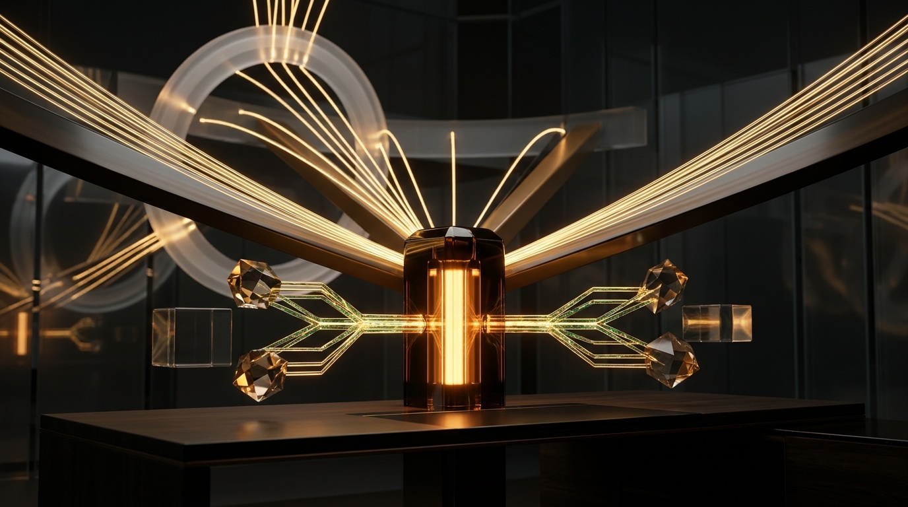

Turning live Google Meet calls into real-time co-creation sessions—mastering calendar auto-join, visible anti-stealth presence, external-guest guardrails, live Whiteboards, Docs & Sheets, Interactive Connectors, and the post-meeting claude.ai hub.
claude.ai meeting page with transcript, owner action items, Artifacts, and partner syncs.Conventional meeting bots sit silently in the corner and email a generic summary twenty minutes after everyone has moved on—leaving your team with the actual documents, spreadsheets, and architecture boards still unbuilt. Claude Meetings flips the workflow inside out by acting as a visible, real-time workspace builder inside Google Meet.
Speaking over teammates breaks meeting momentum, so Anthropic designed Claude Meetings to listen to spoken cues (“Claude, pull last quarter’s ARR”) and typed Meet chat commands, then respond primarily in Google Meet text chat alongside clickable links to live Artifacts. Humans keep talking smoothly while charts, tables, Whiteboards, and Docs take shape right beside the call.
claude.ai meeting hub.
Launched in November 2026 beta exclusively for Claude Team and Claude Enterprise workspaces (not Free, Pro, or Max), Claude Meetings launches first on Google Meet with strict security and quota rules.
Claude Meetings & Meetings with external guests).Organization settings → Products → Claude Meetings (beta) (or assign a custom role).
2. User Calendar Link: Open Meetings in claude.ai and authorize Google Calendar.
3. Join Rule: Pick Settings → Capabilities → Meetings → Auto-join (All calls or All except 1:1s), or click Add Claude manually per event.
| Tool / Approach | Live In-Call Creation | Video Platforms | Security & Guest Mode | Best Fit Use Case |
|---|---|---|---|---|
| Claude Meetings Google Meet Beta |
Native Live Co-Editing: Whiteboards, Docs, Sheets + CRM lookups in call. | Google Meet at launch (additional platforms planned). | Visible bot + auto-leaves unapproved external calls. | Internal sprints, planning, design & architecture working sessions. |
| Granola / Otter / Fireflies.ai Dedicated Note-Takers |
Post-Call First: Capture & recap; sync transcripts into Claude after. | Zoom, Microsoft Teams, Google Meet & Mac audio. | User-managed bot or bot-free local audio capture. | Multi-platform calls & external interviews forwarded to Claude. |
| Gong / Attention Revenue Intelligence |
Deal Coaching: Live sales scorecards, battlecards & CRM field sync. | Cross-platform enterprise dialers & video rooms. | SOC2 / HIPAA sales call recording & compliance archives. | External customer discovery, renewals & VP pipeline reviews. |
| Manual Audio → Claude Project Async Synthesis |
Zero Live Bot: Upload approved transcript or notes after the call. | Any meeting room, phone call, or in-person huddle. | Safe for ZDR, HIPAA & CMEK regulated orgs. | Board meetings, M&A, healthcare & locked-down legal reviews. |
Add Claude manually.
When Claude enters your Google Meet call, the experience bridges the video call window and a shared claude.ai live workspace—keeping human voices, Meet chat answers, Artifacts, and Interactive Connectors synchronized in real time.
claude.ai/meetings/q4-billing
@Claude move EU VAT review to Devon by Friday
claude.ai Hub: Once Google Meet ends, the live link compiles automatically into your org-private hub holding the full transcript, structured notes, owner-assigned action items, and every created Artifact.
The signature breakthrough of Claude Meetings is closing the gap between talking and shipping. Instead of ending a 45-minute call with only a to-do list, your team leaves with the actual Whiteboard, PRD Doc, or financial Sheet drafted and reviewed together live.
Lead clearly with Claude’s name when speaking: “Claude, spin up a Claude Sheet comparing our three vendor quotes.” For sensitive connector writes, Claude asks a quick confirmation in chat to verify speaker intent.
Rather than interrupting speakers with synthetic voice audio, Claude posts crisp answers and clickable Artifact links straight into Google Meet chat while the discussion keeps moving.
Someone not holding the floor can type a side request in Meet chat (e.g., “Claude, verify our 99.9% uptime SLA in Notion”) so facts arrive in text without interrupting the presenter.
Click the posted session link to open the live Whiteboard, Doc, or Sheet in claude.ai. Teammates drag stickies, tweak numbers, and refine copy alongside Claude live on the call.
Example spoken mid-call cue (produces a live Artifact without stopping conversation):
"Claude, take the last ten minutes of our launch discussion and create a Claude Whiteboard with three swimlanes—Engineering, Legal, and GTM—assigning Maya, Devon, and Priya to the milestones we just agreed on and flagging open questions in amber."Knowing exactly when Claude enters, when it refuses or leaves, and how to phrase crisp mid-call prompts keeps every session predictable and clutter-free.
Settings → Capabilities → Meetings → Auto-join to All meetings or All except 1:1s (admins cannot force auto-join on users).Meetings in Claude and click Add Claude on any individual calendar invite.Meetings on claude.ai and invite Claude onto the active Google Meet call immediately.When steering Claude aloud or in Meet chat during a fast-moving discussion, combining these five elements produces ready-to-share Artifacts on the first attempt:
| Command Component | What It Governs in Google Meet | Failure Mode When Omitted |
|---|---|---|
| Trigger & Scope | Wakes Claude cleanly via Claude, ... and frames which part of the call matters. |
Claude summarizes old small talk or misses your intent in a noisy multi-speaker room. |
| Connected Context | Names exact CRM, warehouse, or Notion/Box tools to query before drafting. | Artifact fills with generic placeholder estimates instead of real org figures. |
| Live Artifact Format | Locks output type: Claude Whiteboard, Claude Doc, or Claude Sheet. |
Returns a long wall of Meet chat text instead of a multiplayer co-editable workspace. |
| Owners & Dates | Captures named teammates and due dates while commitments are still spoken aloud. | Post-call action list arrives with vague bullets like “team to follow up.” |
| Privacy & Approval | Separates read-only drafting from approval-gated writes to Jira, HubSpot, or Box. | Unintended edits or heavy tool quota usage triggered mid-brainstorm. |
Instead of pausing a decision while someone shares their screen to dig through five browser tabs, Claude Meetings pulls live numbers from your connected data warehouse and opens native Interactive Connectors (MCP Apps) right beside your call workspace.
Admins enable approved connectors (with optional Team/Enterprise Auto-Connect) so first-time lookups honor each user’s existing CRM and workspace permissions automatically.
Ask aloud or in chat for ARR metrics, ticket status, or spec revisions. Claude surfaces grounded answers in chat and opens interactive partner panes side-by-side inside claude.ai.
Reads happen fast; external writes (updating a Salesforce stage, publishing a Confluence page, or revising a Box file) wait for your explicit confirmation click.
| Connector / System | Live Mid-Call Superpower (No Tab Switching) | Sample Prompt Inside Google Meet |
|---|---|---|
| Atlassian Confluence & Jira |
Opens live Confluence pages beside your session; drafts spec updates and stages Jira sprint issues on screen. | “Claude, open our Q4 Launch Confluence page side-by-side and add the 3 rollout blockers Devon listed.” |
| Salesforce CRM & Call Prep |
Retrieves account health, open opportunities, contract renewals, and previous deal notes during pipeline syncs. | “Claude, pull open blockers and ARR expansion targets for the Northstar Enterprise account.” |
| HubSpot Pipeline & GTM |
Audits deal stages, prioritizes follow-up queues, and drafts activity logs directly from spoken call agreements. | “Claude, check HubSpot deals closing before Nov 30 missing legal sign-off and list owners in chat.” |
| Notion Docs & Databases |
Queries live Notion project databases and updates structured sprint tables inside an interactive native view. | “Claude, look up our SLA uptime commitments in the Product Notion DB and insert them into our Sheet.” |
| Box + Data Warehouses Files & Metrics |
Compares contract or deck revisions side-by-side in Box; queries connected warehouse KPIs mid-discussion. | “Claude, pull Oct cohort retention from our warehouse and compare against the Q3 Box forecast memo.” |
During the beta, transcription, meeting notes, basic chat replies, and live Artifacts (through Feb 10, 2027) carry zero surcharge. However, asking Claude to run heavy connected tool calls—such as scanning dozens of Salesforce accounts or running multi-table warehouse queries mid-call—draws from your normal Team or Enterprise usage quota. Batch related lookups into one clean query whenever possible.
claude.ai Hub & Transcript Ecosystem
The moment you hang up Google Meet, Claude Meetings automatically compiles every spoken detail and co-created deliverable onto one dedicated, internal claude.ai meeting page—while connecting cleanly with the transcript platforms your teams already run.

claude.ai meeting hub combining transcript, notes, action owners, and Artifacts—plus seamless transcript routing with Granola, Fireflies.ai, Otter, Attention, and Gong.
claude.ai Meeting Page| Workflow / Partner | How Data Flows | Best Team Outcome |
|---|---|---|
| Claude Projects Archive | Pin Meeting Hub / Artifacts to Project | Future specs, Docs, and Whiteboards automatically inherit agreed decisions and owners. |
| Gong / Attention | Revenue call & transcript sync | Combines external prospect coaching telemetry with Claude’s custom deal briefs & ROI Sheets. |
| Granola / Fireflies / Otter | Cross-platform transcript bridge | Pulls Zoom/Teams/local transcripts into Claude’s hub when meetings happen outside Google Meet. |
| Atlassian / HubSpot / Slack | Post-hub interactive follow-up | Converts owner-assigned action items from the hub into Jira tickets, CRM logs, or team recaps. |
Say any of these prompts aloud (starting clearly with “Claude, ...”), paste them into Google Meet chat mid-call, or run the final recipe inside your dedicated claude.ai meeting hub immediately after hanging up.
| Recipe & Call Type | Copy-Paste Prompt (Zero Ambiguous Placeholders) | Live Output & Next Step |
|---|---|---|
| 1. Sprint Kickoff → Whiteboard + Jira Engineering & PM |
Claude, query our Atlassian Jira Q4 Checkout epic for open blockers, then build a live Claude Whiteboard with 3 swimlanes (Backend, QA, GTM). Place every milestone discussed in the last 10 minutes with @Owner and Friday due dates, and drop the Whiteboard link quietly in Meet chat. |
Live multiplayer Whiteboard + verified Jira blockers ready to co-edit on screen. |
| 2. Pipeline Sync → CRM + Brief Sales & CS Ops |
Claude, look up our Salesforce and HubSpot records for accounts renewing in the next 45 days above $50k ARR. Post a concise risk table in Google Meet chat and create a live Claude Doc outlining save plays with named AE and CSM owners before we move to the next agenda item. |
Text-chat risk matrix + live save-play Doc without interrupting spoken discussion. |
| 3. Budget Review → Live Sheet Finance & Leadership |
Claude, open a live Claude Sheet comparing the three cloud vendor pricing tiers we just debated, pulling our October usage baseline from our connected warehouse. Add dynamic formulas for 10%, 25%, and 40% growth scenarios and share the co-edit link in Meet chat. |
Formula-driven Claude Sheet executives can test live together during the call. |
| 4. Spec Critique → Box + Confluence Product & Legal |
Claude, open our Box Q4 Privacy Policy draft side-by-side and compare it against the compliance concerns raised on this call. Build a clean revision table inside a Claude Doc, and draft suggested Confluence updates for my explicit approval before publishing. |
Side-by-side redline table + approval-gated Confluence draft; zero unapproved writes. |
| 5. Post-Call Hub → Action Dispatch Executed on claude.ai Hub |
Using this completed Meeting Hub transcript, notes, and attached Whiteboard, group all owner-assigned action items by teammate with due dates, draft a crisp 6-bullet Slack wrap-up, and export the transcript summary formatted for our Fireflies.ai / Gong team archive. |
Verified action dispatch, Slack summary, and clean partner archive in 15 seconds. |
Live call transcription and CRM lookups touch sensitive company discussions. Anthropic enforces visible anti-stealth design, strict external-guest shutoffs, granular Enterprise custom roles, and clear beta exclusions for high-compliance workspaces.
Organization settings → Products → Claude Meetings (beta).Claude Meetings and Meetings with external guests independently per pilot team or custom role.| Policy / Guardrail | Claude Team Plan | Claude Enterprise (Standard) | ZDR / HIPAA / CMEK Orgs |
|---|---|---|---|
| Beta Availability | On by default (owner toggleable) | Off by default (org or custom role) | Excluded during beta (feature hidden) |
| External-Guest Rule | Blocked unless owner authorizes | Custom role gated (auto-leaves if unapproved) | N/A — use approved manual upload |
| Pricing & Quotas | Notes/chat free; Artifacts free thru Feb 10, 2027 | Notes/chat free; heavy tool calls use org quota | Standard plan API / Project quotas |
| 1:1 Auto-Join Control | User-scoped (Skip 1:1s supported) |
User-scoped (admins cannot force-enable) | Not applicable |
| Post-Call Hub Scope | Org-internal claude.ai meeting page |
SSO-gated org hub + audit governance | Store vetted notes in private Projects |
1. Confirm your workspace is not configured with ZDR, HIPAA-ready BAA, or CMEK (which are excluded during beta).
2. Create an Enterprise custom role granting Claude Meetings (internal-only) to a 20-person Product & Engineering pilot while leaving Meetings with external guests off.
3. Review connected MCP permissions (Salesforce, Atlassian, Box) before expanding org-wide.
Claude Meetings acts as the live conversational front door to Anthropic’s workspace suite—connecting Google Calendar, live Google Meet co-editing, Interactive Connectors, the claude.ai post-meeting hub, partner intelligence platforms, and Claude Code.
Keep Google Calendar Auto-Join configured to skip 1:1s. Claude verifies internal-only attendees and enters your Google Meet visibly with a Meet chat transparency link before kickoff—and leaves immediately if an unapproved outsider arrives.
Speak “Claude, build a Whiteboard / Doc / Sheet” mid-call. Claude replies silently in text chat so everyone opens the live workspace and refines the deliverable together before hanging up.
Pull CRM renewals from Salesforce or HubSpot, edit Confluence or Notion specs side-by-side, and review Box files live without breaking conversation rhythm or switching browser tabs.
Pin the finished PRD Doc and notes from your dedicated claude.ai Meeting Hub into a Claude Project, sync transcripts to Granola/Gong/Fireflies, and pass specs straight to Claude Code.
Use this diagnostic clinic whenever Claude unexpectedly skips or leaves a Google Meet call, a connector quota warning appears, or an Enterprise toggle is hidden—followed by our 6-point meeting readiness checklist.
| Symptom / Issue | Root Cause | 10-Second Fix |
|---|---|---|
| 1. Claude did not auto-join my Google Meet call | Calendar disconnected, Auto-Join disabled, or the call is a 1:1 with Skip 1:1s active. | Open Meetings in claude.ai, click Add Claude on the live event, and check Settings → Capabilities → Meetings → Auto-join. |
| 2. Claude abruptly exited the call mid-meeting | An external guest outside your org domain joined via a forwarded Meet link. | Expected External-Guest Security Guardrail; move sensitive topics internal-only or ask an Enterprise admin to grant Meetings with external guests. |
| 3. Meetings toggle is missing on Enterprise | Enterprise defaults Meetings to Off, or org runs ZDR, HIPAA-ready, or CMEK. |
Ask a Primary Owner to check Organization settings → Products → Claude Meetings (beta); note ZDR/HIPAA/CMEK orgs are excluded during beta. |
| 4. Claude replied in Meet chat instead of speaking | Text-only Meet chat replies are by design so human voices stay uninterrupted. | Keep speaking naturally, read Claude’s summary in Google Meet chat, and click the posted Artifact link to co-edit the Doc, Sheet, or Whiteboard. |
| 5. CRM or Atlassian lookup failed or slowed down | Connector lacks OAuth approval or heavy queries hit normal plan usage quota. | Authorize the Interactive Connector in Settings → Connectors, click the confirmation prompt, and batch multi-account lookups carefully. |
| 6. External guest call joined, but Claude won’t reply in chat | Admin-enabled external guest mode enforces passive/muted reply guardrails. | Let Claude capture transcript and notes quietly during the external call, then run follow-up prompts inside the post-meeting claude.ai hub afterward. |
| 7. Teammate cannot find the Doc or Whiteboard built on the call | Looking in personal chat threads instead of the dedicated meeting hub page. | Open the Meetings section on claude.ai, select the call’s dedicated hub page, and pin generated Artifacts into your shared team Project. |
claude.ai hub and sync transcripts to Gong/Granola/Fireflies if needed.